{kind=link}
{kind=link}
{kind=link}
{kind=link}
{kind=link}
{kind=link}
{kind=link}
{kind=link}
{kind=link}
{kind=link}

Access transistor
Random Access Memory (RAM) is one of the fundamental components of computers. It is used to store program's temporary data during computer runtime. Furthermore, RAM is usually used to store the program itself besides the data in stored-program computers in Von Neumann architecture.
Modern RAM is made of semiconductors such as transistors like MOS as well as capacitors, both of which are usually embedded together in an integrated circuits. We usually classify the semiconductor RAMs in two categories:
In order to gain deep understanding of how semiconductor RAMs are organized and how they work from the inside, I, along with a group of hardworker students at CSED, decided to create a static RAM with discrete MOSFETs. We submitted this project for EE 236 (Electronics) course and it got the highest ranking among the class.
We simulated two models:
Model A: Each memory cell is made of a typical S-R latch. The latch consisted of two cross-coupled inverters and two access transistors.
Model B: Each memory cell is made of a typical 6T CMOS memory cell and the bitslice is organized in the same manner of VLSI RAMs but with discrete MOSFETs instead.
This one was easy to understand because it was direct application to what we had studied in both Electronics and Digital Systems courses. We used Proteus to design and simulate this model. The structural unit for this model was the CMOS AND, OR and NOT gates:
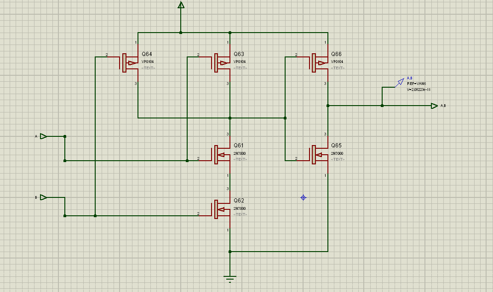
CMOS AND gate (click on the image to enlarge)
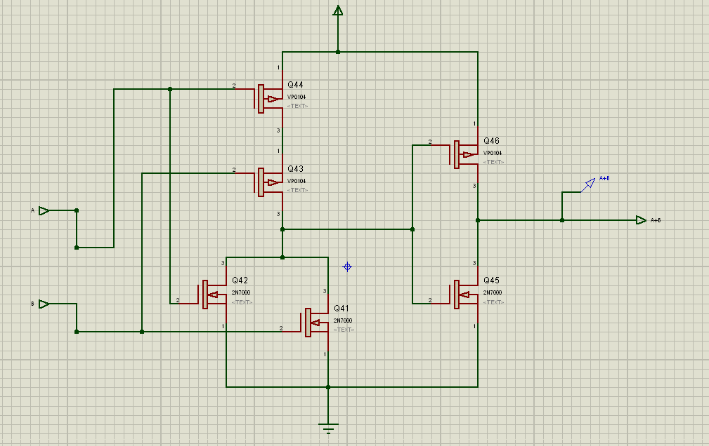
CMOS OR gate (click on the image to enlarge)
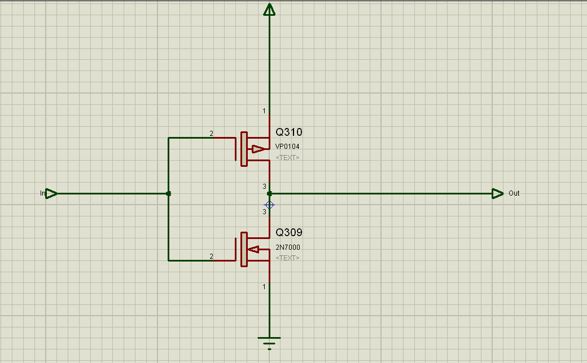
CMOS NOT gate (click on the image to enlarge)
We have also created a tristate buffer with to be used to bring the outputs of the RAM to high impedence CE or OE are off:
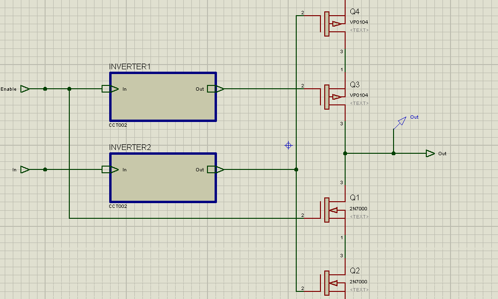
Tristate buffer (click on the image to enlarge)
As explained above, the S-R latch for this model is typically two cross-couples inverters with two access transistors:
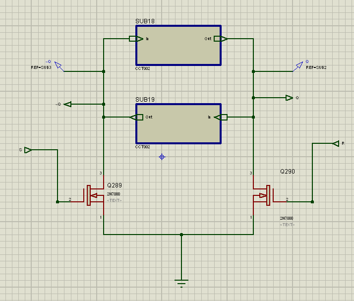
The S-R latch (click on the image to enlarge)
The memory cell consists of the S-R latch and enable/disable logic circuit for input and output (a gated S-R latch):
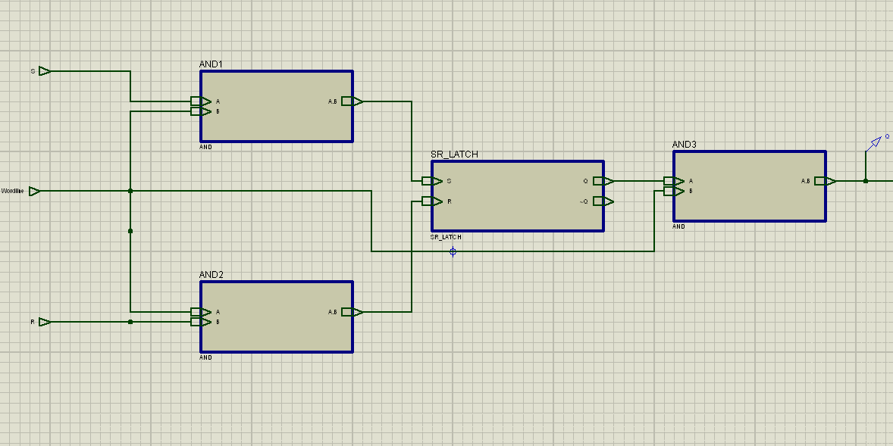
The memory cell (click on the image to enlarge)
The bit-slice can be simply constructed from those gated S-R latches as described in chapter 12 of "Principles of Computer Hardware":
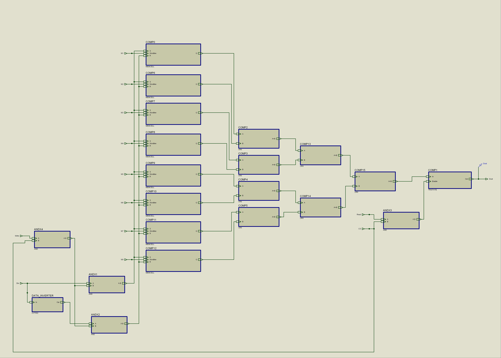
Bitslice of 8 cells (click on the image to enlarge)
A decoder was made to decode the address. The design of such CMOS decoders is well explained by Sedra:
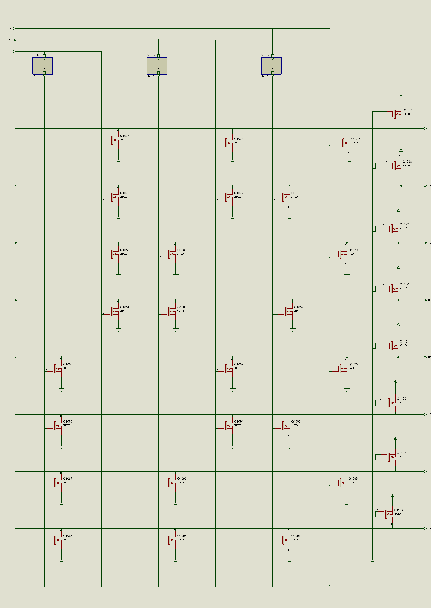
3-to-8 decoder (click on the image to enlarge)
By connecting the decoder to a bitslice, we had a working 8-bit RAM. More bitslices can be added up easily to enlarge the capacity of the RAM and widen the word size. Unfortunately, We couldn't add any more bitslices as simulation needed very high processing power.
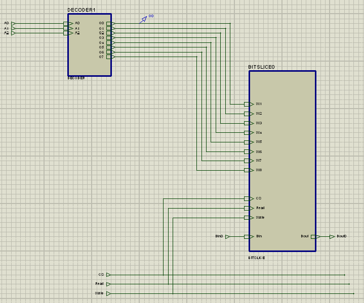
The RAM (click on the image to enlarge)
We tested the design and it worked as expected (after some debugging). Finally, we encapsulated the design into this little black box:
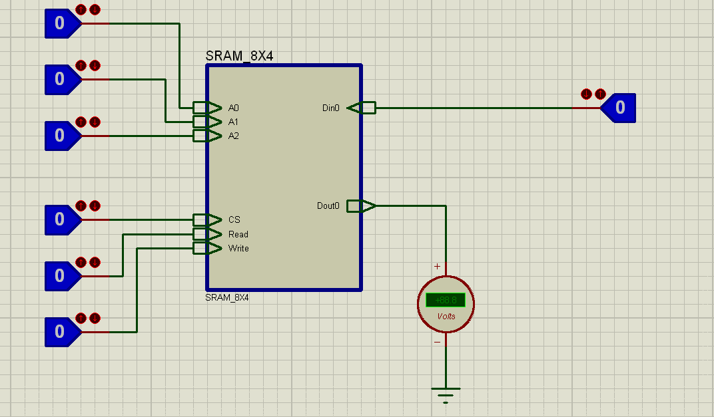
The RAM chip! (click on the image to enlarge)
The structural unit for this model was a typical 6T CMOS memory cell which is well explained in Sedra. We used Multisim to design and simulate this model. We spent a lot of time debugging and testing this model at Engineers' Club in Saba Basha, Alexandria.
Because the discrete transistors that we used had different characteristics from CMOS transistors on VLSI chips, we had to make a unit which we called (access transistor). The access transistor unit consisted of two NMOS transistors connected as shown below. This access transistor lets the current passes between S and D when the gate is high (no matter what the voltages on S and D are).
Access transistor
We then made the CMOS inverter that would be used to build the memory cell:
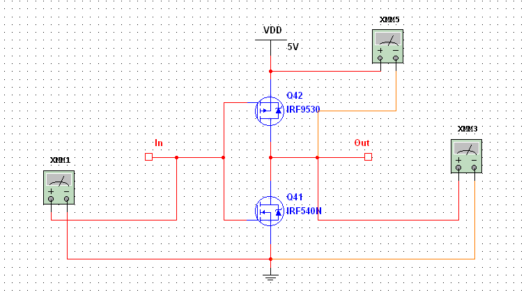
CMOS inverter (click on the image to enlarge)
By connecting two cross-coupled inverters with the access transistors, we obtained a typical 6T memory cell. Notice that this cell is different from the memory cell in model A. If wordline is high, the transistor will be connected to the bitlines for read/write operations.
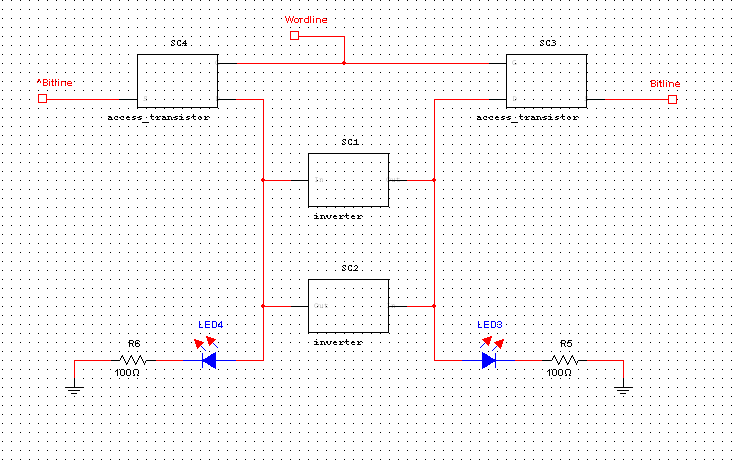
Memory Cell (click on the image to enlarge)
Memory cells were organized together to make a bitslice:
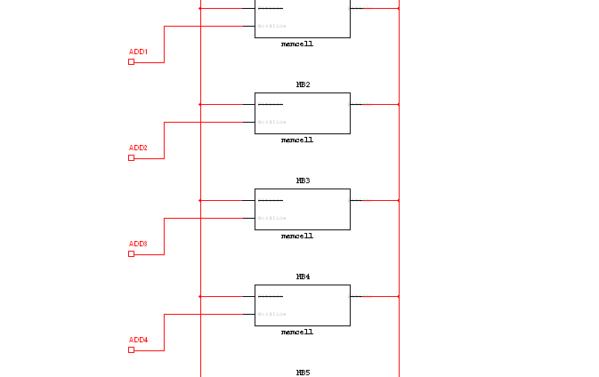
Bitslice (click on the image to enlarge)
The bitslice had a bitline conditioning circuitry to precharge the bitlines with high voltage before reads:
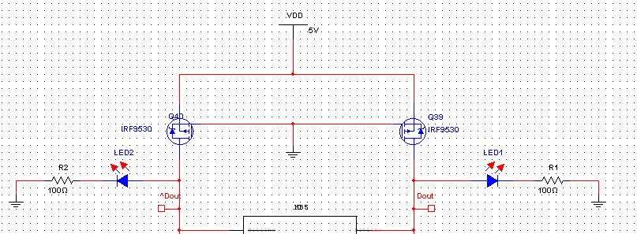
Bitline conditioning circuit (click on the image to enlarge)
We also made a decoder, just like Model A:

CMOS decoder (click on the image to enlarge)
Finally, we connected the bitslice with the decoder to obtain the RAM:
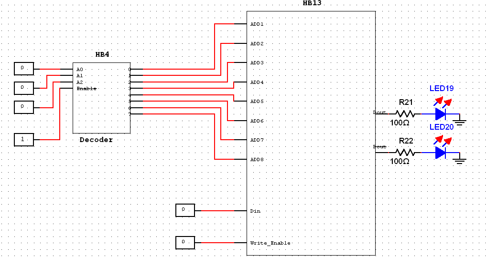
The RAM (click on the image to enlarge)
Realizing a big RAM in MOSFETs needs too many transistors and too much work, so we settled for a physical RAM with two flip flops and a decoder (all in MOSFETs of course). We used Eagle to design the PCB boards.

The decoder design (click on the image to enlarge)

The decoder PCB
Unfortunately, I don't have photos for the decoder board but I have got some photos for the flip flop PCB:
The other flip flop was realized on a breadboard:
It's amazing how our flip-flop "memorizes" its state and how it can be switched between ON and OFF states. The wires to be activated are the S and R signals. When S is high and R is low, Q goes high and the LED associated with Q becomes ON. If S is low and R is high, Q goes low and the LED associated with Q` becomes ON (Q becomes OFF). When S and R are both low, the value of Q "remains" in the latest state. This behavior is a typical bistable multivibrator.
{kind=link}
{kind=link}
{kind=link}
{kind=link}
{kind=link}
{kind=link}
{kind=link}
{kind=link}
{kind=link}